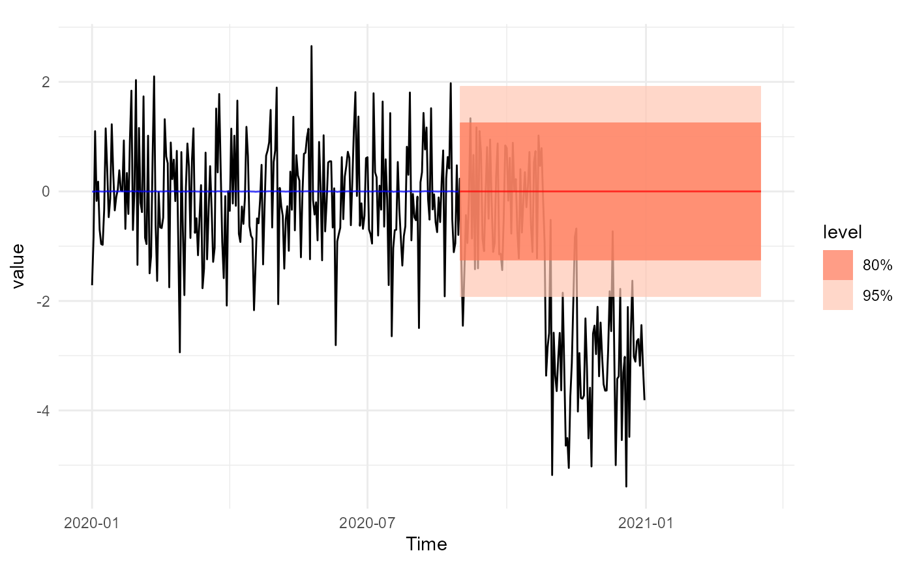
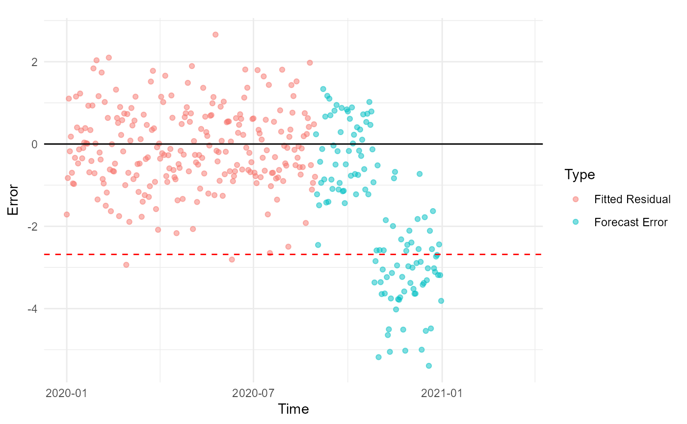

plot_extreme_analysis.RdProduces diagnostic visualizations from the results of
model_extremes and test_extremes.
The function generates two key plots:
A time series plot of observed, fitted, and forecasted values.
A diagnostic plot of residuals and forecast errors with the estimated lower extreme threshold marked.
plot_extreme_analysis(analysis_result)A list object returned by
test_extremes, containing the fitted model, forecast,
threshold information, and error diagnostics.
A list containing:
A ggplot2 object showing observed, fitted, and forecasted series.
A ggplot2 object showing residuals and forecast errors with threshold.
The function visualizes both the model fit and the extremal analysis:
The **main plot** shows the observed series (black), fitted values (blue), and forecasts (red), annotated with the thresholding method (EVT or boxplot).
The **error plot** displays residuals and forecast errors over time. The horizontal dashed red line represents the lower extreme threshold, below which anomalies may occur.
# Create a sample daily time series dataset (use Date, not POSIXct)
data <- tsibble::tsibble(
date = seq.Date(as.Date("2020-01-01"), as.Date("2020-12-31"), by = "day"),
value = c(rnorm(300),rnorm(66, -3)),
index = date
)
# Run the model_extremes function
result <- model_extremes(
full_data = data,
time_col = date,
typical_start = "2020-01-01",
typical_end = "2020-08-30",
response = value,
thr_prob_fit = 0.1,
t_method = "boxplot"
)
#> # A tsibble: 243 x 2 [1D]
#> date value
#> <date> <dbl>
#> 1 2020-01-01 -1.71
#> 2 2020-01-02 -0.832
#> 3 2020-01-03 1.10
#> 4 2020-01-04 -0.174
#> 5 2020-01-05 0.179
#> 6 2020-01-06 -0.698
#> 7 2020-01-07 -0.960
#> 8 2020-01-08 -0.975
#> 9 2020-01-09 -0.339
#> 10 2020-01-10 1.15
#> # ℹ 233 more rows
test_data <- data |>
dplyr::filter(date > as.Date("2020-06-30")) |>
dplyr::select(date, value) |>
tsibble::as_tsibble(index = date)
test_result <- riceblast::test_extremes(result,test_data = test_data, h = 200)
# Generate and view plots
plots <- plot_extreme_analysis(test_result)
#> Plot variable not specified, automatically selected `.vars = .fitted`
plots$main_plot

plots$error_plot
#> Warning: Removed 77 rows containing missing values or values outside the scale range
#> (`geom_point()`).
